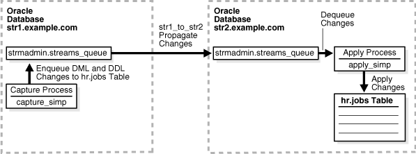

1 Simple Single-Source Replication Example
This chapter illustrates an example of a simple single-source replication environment that can be constructed using Oracle Streams.
This chapter contains these topics:
1.1 Overview of the Simple Single-Source Replication Example
The example in this chapter illustrates using Oracle Streams to replicate data in one table between two databases. A capture process captures data manipulation language (DML) and data definition language (DDL) changes made to the jobs table in the hr schema at the str1.example.com Oracle database, and a propagation propagates these changes to the str2.example.com Oracle database. Next, an apply process applies these changes at the str2.example.com database. This example assumes that the hr.jobs table is read-only at the str2.example.com database.
Figure 1-1 provides an overview of the environment.
Figure 1-1 Simple Example that Shares Data from a Single Source Database
Description of "Figure 1-1 Simple Example that Shares Data from a Single Source Database"
1.2 Prerequisites
The following prerequisites must be completed before you begin the example in this chapter.
-
Set the following initialization parameters to the values indicated:
-
GLOBAL_NAMES: This parameter must be set toTRUEat each database that is participating in your Oracle Streams environment. -
COMPATIBLE: This parameter must be set to10.2.0or higher at each database that is participating in your Oracle Streams environment. -
STREAMS_POOL_SIZE: Optionally set this parameter to an appropriate value for each database in the environment. This parameter specifies the size of the Oracle Streams pool. The Oracle Streams pool stores messages in a buffered queue and is used for internal communications during parallel capture and apply. When theMEMORY_TARGET,MEMORY_MAX_TARGET, orSGA_TARGETinitialization parameter is set to a nonzero value, the Oracle Streams pool size is managed automatically.See Also:
Oracle Streams Replication Administrator's Guide for information about other initialization parameters that are important in an Oracle Streams environment
-
-
Any database producing changes that will be captured must be running in
ARCHIVELOGmode. In this example, changes are produced atstr1.example.com, and sostr1.example.commust be running inARCHIVELOGmode.See Also:
Oracle Database Administrator's Guide for information about running a database in
ARCHIVELOGmode -
Configure your network and Oracle Net so that the
str1.example.comdatabase can communicate with thestr2.example.comdatabase. -
Create an Oracle Streams administrator at each database in the replication environment. In this example, the databases are
str1.example.comandstr2.example.com. This example assumes that the user name of the Oracle Streams administrator isstrmadmin.See Also:
Oracle Streams Replication Administrator's Guide for instructions about creating an Oracle Streams administrator
1.3 Create Queues and Database Links
Complete the following steps to create queues and database links for an Oracle Streams replication environment that includes two Oracle databases.
- "Show Output and Spool Results"
- "Create the ANYDATA Queue at str1.example.com"
- "Create the Database Link at str1.example.com"
- "Set Up the ANYDATA Queue at str2.example.com"
- "Check the Spool Results"
Note:
If you are viewing this document online, then you can copy the text from the "BEGINNING OF SCRIPT" line after this note to the next "END OF SCRIPT" line into a text editor and then edit the text to create a script for your environment. Run the script with SQL*Plus on a computer that can connect to all of the databases in the environment.
/************************* BEGINNING OF SCRIPT ******************************
- Show Output and Spool Results
-
Run
SETECHOONand specify the spool file for the script. Check the spool file for errors after you run this script.*/ SET ECHO ON SPOOL streams_setup_simple.out /*
- Create the ANYDATA Queue at str1.example.com
-
Connect as the Oracle Streams administrator at the database where you want to capture changes. In this example, that database is
str1.example.com.*/ CONNECT strmadmin@str1.example.com /*
Run the
SET_UP_QUEUEprocedure to create a queue namedstreams_queueatstr1.example.com. This queue will function as theANYDATAqueue by holding the captured changes that will be propagated to other databases.Running the
SET_UP_QUEUEprocedure performs the following actions:-
Creates a queue table named
streams_queue_table. This queue table is owned by the Oracle Streams administrator (strmadmin) and uses the default storage of this user. -
Creates a queue named
streams_queueowned by the Oracle Streams administrator (strmadmin). -
Starts the queue.
*/ EXEC DBMS_STREAMS_ADM.SET_UP_QUEUE(); /*
-
- Create the Database Link at str1.example.com
-
Create the database link from the database where changes are captured to the database where changes are propagated. In this example, the database where changes are captured is
str1.example.com, and these changes are propagated tostr2.example.com.*/ ACCEPT password PROMPT 'Enter password for user: ' HIDE CREATE DATABASE LINK str2.example.com CONNECT TO strmadmin IDENTIFIED BY &password USING 'str2.example.com'; /*
- Set Up the ANYDATA Queue at str2.example.com
-
Connect as the Oracle Streams administrator at
str2.example.com.*/ CONNECT strmadmin@str2.example.com /*
Run the
SET_UP_QUEUEprocedure to create a queue namedstreams_queueatstr2.example.com. This queue will function as theANYDATAqueue by holding the changes that will be applied at this database.Running the
SET_UP_QUEUEprocedure performs the following actions:-
Creates a queue table named
streams_queue_table. This queue table is owned by the Oracle Streams administrator (strmadmin) and uses the default storage of this user. -
Creates a queue named
streams_queueowned by the Oracle Streams administrator (strmadmin). -
Starts the queue.
*/ EXEC DBMS_STREAMS_ADM.SET_UP_QUEUE(); /*
-
- Check the Spool Results
-
Check the
streams_setup_simple.outspool file to ensure that all actions finished successfully after this script is completed.*/ SET ECHO OFF SPOOL OFF /*************************** END OF SCRIPT ******************************/
1.4 Configure Capture, Propagation, and Apply for Changes to One Table
Complete the following steps to specify the capture, propagation, and apply definitions for the hr.jobs table using the DBMS_STEAMS_ADM package.
- "Show Output and Spool Results"
- "Configure Propagation at str1.example.com"
- "Configure the Capture Process at str1.example.com"
- "Set the Instantiation SCN for the hr.jobs Table at str2.example.com"
- "Configure the Apply Process at str2.example.com"
- "Start the Apply Process at str2.example.com"
- "Start the Capture Process at str1.example.com"
- "Check the Spool Results"
Note:
If you are viewing this document online, then you can copy the text from the "BEGINNING OF SCRIPT" line after this note to the next "END OF SCRIPT" line into a text editor and then edit the text to create a script for your environment. Run the script with SQL*Plus on a computer that can connect to all of the databases in the environment.
/************************* BEGINNING OF SCRIPT ******************************
- Show Output and Spool Results
-
Run
SETECHOONand specify the spool file for the script. Check the spool file for errors after you run this script.*/ SET ECHO ON SPOOL streams_share_jobs.out /*
- Configure Propagation at str1.example.com
-
Connect to
str1.example.comas thestrmadminuser.*/ CONNECT strmadmin@str1.example.com /*
Configure and schedule propagation of DML and DDL changes to the
hr.jobstable from the queue atstr1.example.comto the queue atstr2.example.com.*/ BEGIN DBMS_STREAMS_ADM.ADD_TABLE_PROPAGATION_RULES( table_name => 'hr.jobs', streams_name => 'str1_to_str2', source_queue_name => 'strmadmin.streams_queue', destination_queue_name => 'strmadmin.streams_queue@str2.example.com', include_dml => TRUE, include_ddl => TRUE, source_database => 'str1.example.com', inclusion_rule => TRUE, queue_to_queue => TRUE); END; / /* - Configure the Capture Process at str1.example.com
-
Configure the capture process to capture changes to the
hr.jobstable atstr1.example.com. This step specifies that changes to this table are captured by the capture process and enqueued into the specified queue.This step also prepares the
hr.jobstable for instantiation and enables supplemental logging for any primary key, unique key, bitmap index, and foreign key columns in this table. Supplemental logging places additional information in the redo log for changes made to tables. The apply process needs this extra information to perform certain operations, such as unique row identification and conflict resolution. Becausestr1.example.comis the only database where changes are captured in this environment, it is the only database where supplemental logging must be enabled for thehr.jobstable.*/ BEGIN DBMS_STREAMS_ADM.ADD_TABLE_RULES( table_name => 'hr.jobs', streams_type => 'capture', streams_name => 'capture_simp', queue_name => 'strmadmin.streams_queue', include_dml => TRUE, include_ddl => TRUE, inclusion_rule => TRUE); END; / /* - Set the Instantiation SCN for the hr.jobs Table at str2.example.com
-
This example assumes that the
hr.jobstable exists at both thestr1.example.comdatabase and thestr2.example.comdatabase, and that this table is synchronized at these databases. Because thehr.jobstable already exists atstr2.example.com, this example uses theGET_SYSTEM_CHANGE_NUMBERfunction in theDBMS_FLASHBACKpackage atstr1.example.comto obtain the current SCN for the source database. This SCN is used atstr2.example.comto run theSET_TABLE_INSTANTIATION_SCNprocedure in theDBMS_APPLY_ADMpackage. Running this procedure sets the instantiation SCN for thehr.jobstable atstr2.example.com.The
SET_TABLE_INSTANTIATION_SCNprocedure controls which LCRs for a table are ignored by an apply process and which LCRs for a table are applied by an apply process. If the commit SCN of an LCR for a table from a source database is less than or equal to the instantiation SCN for that table at a destination database, then the apply process at the destination database discards the LCR. Otherwise, the apply process applies the LCR.In this example, both of the apply process at
str2.example.comwill apply transactions to thehr.jobstable with SCNs that were committed after SCN obtained in this step.Note:
This example assumes that the contents of the
hr.jobstable atstr1.example.comandstr2.example.comare consistent when you complete this step. Ensure that there is no activity on this table while the instantiation SCN is being set. You might want to lock the table at each database while you complete this step to ensure consistency. If the table does not exist at the destination database, then you can use export/import for instantiation.*/ DECLARE iscn NUMBER; -- Variable to hold instantiation SCN value BEGIN iscn := DBMS_FLASHBACK.GET_SYSTEM_CHANGE_NUMBER(); DBMS_APPLY_ADM.SET_TABLE_INSTANTIATION_SCN@STR2.EXAMPLE.COM( source_object_name => 'hr.jobs', source_database_name => 'str1.example.com', instantiation_scn => iscn); END; / /* - Configure the Apply Process at str2.example.com
-
Connect to
str2.example.comas thestrmadminuser.*/ CONNECT strmadmin@str2.example.com /*
Configure
str2.example.comto apply changes to thehr.jobstable.*/ BEGIN DBMS_STREAMS_ADM.ADD_TABLE_RULES( table_name => 'hr.jobs', streams_type => 'apply', streams_name => 'apply_simp', queue_name => 'strmadmin.streams_queue', include_dml => TRUE, include_ddl => TRUE, source_database => 'str1.example.com', inclusion_rule => TRUE); END; / /* - Start the Apply Process at str2.example.com
-
Set the
disable_on_errorparameter tonso that the apply process will not be disabled if it encounters an error, and start the apply process atstr2.example.com.*/ BEGIN DBMS_APPLY_ADM.SET_PARAMETER( apply_name => 'apply_simp', parameter => 'disable_on_error', value => 'N'); END; / BEGIN DBMS_APPLY_ADM.START_APPLY( apply_name => 'apply_simp'); END; / /* - Start the Capture Process at str1.example.com
-
Connect to
str1.example.comas thestrmadminuser.*/ CONNECT strmadmin@str1.example.com /*
Start the capture process at
str1.example.com.*/ BEGIN DBMS_CAPTURE_ADM.START_CAPTURE( capture_name => 'capture_simp'); END; / /* - Check the Spool Results
-
Check the
streams_share_jobs.outspool file to ensure that all actions finished successfully after this script is completed.*/ SET ECHO OFF SPOOL OFF /*************************** END OF SCRIPT ******************************/
1.5 Make Changes to the hr.jobs Table and View Results
Complete the following steps to make DML and DDL changes to the hr.jobs table at str1.example.com and then confirm that the changes were captured at str1.example.com, propagated from str1.example.com to str2.example.com, and applied to the hr.jobs table at str2.example.com.
- Make Changes to hr.jobs at str1.example.com
-
Make the following changes to the
hr.jobstable.CONNECT hr@str1.example.com Enter password: password UPDATE hr.jobs SET max_salary=9545 WHERE job_id='PR_REP'; COMMIT; ALTER TABLE hr.jobs ADD(duties VARCHAR2(4000)); - Query and Describe the hr.jobs Table at str2.example.com
-
After some time passes to allow for capture, propagation, and apply of the changes performed in the previous step, run the following query to confirm that the
UPDATEchange was propagated and applied atstr2.example.com:CONNECT hr@str2.example.com Enter password: password SELECT * FROM hr.jobs WHERE job_id='PR_REP';The value in the
max_salarycolumn should be9545.Next, describe the
hr.jobstable to confirm that theALTERTABLEchange was propagated and applied atstr2.example.com:DESC hr.jobs
The
dutiescolumn should be the last column.